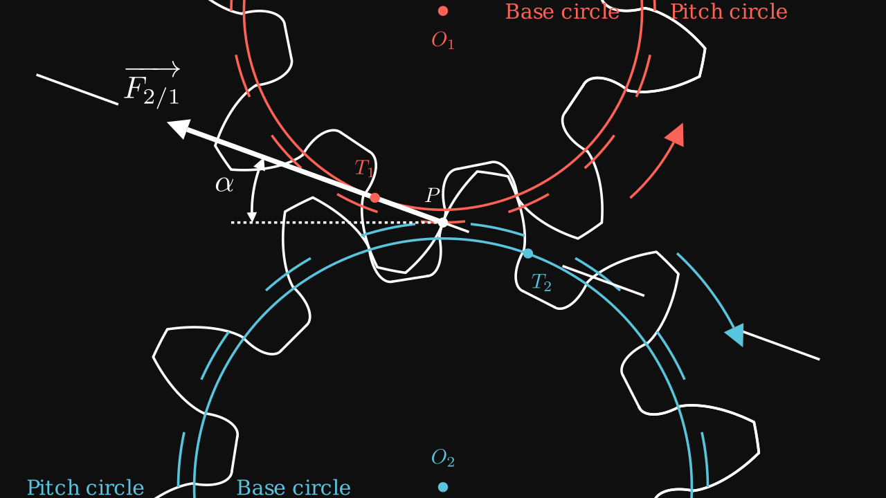
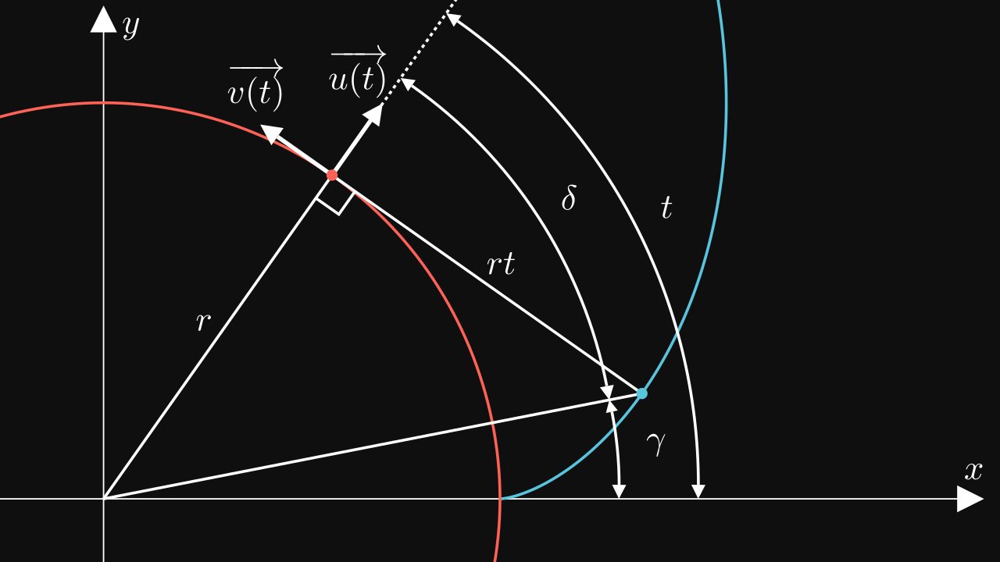
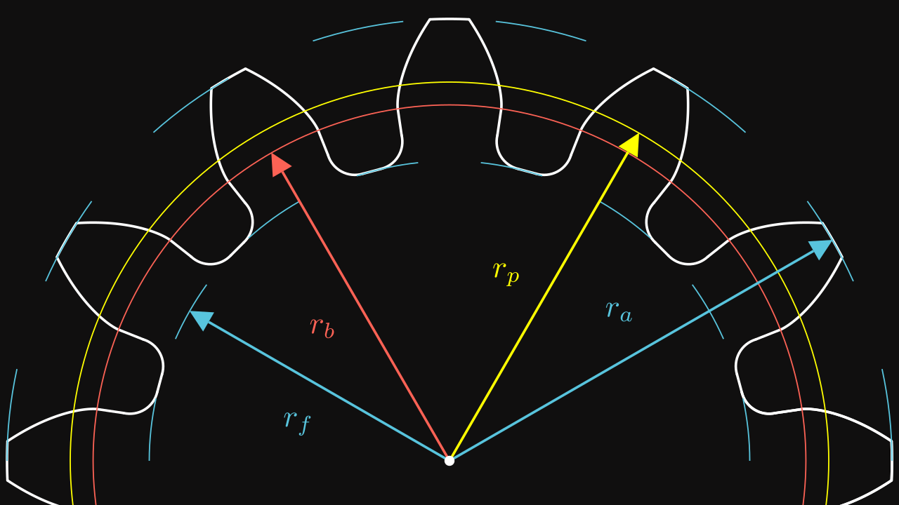
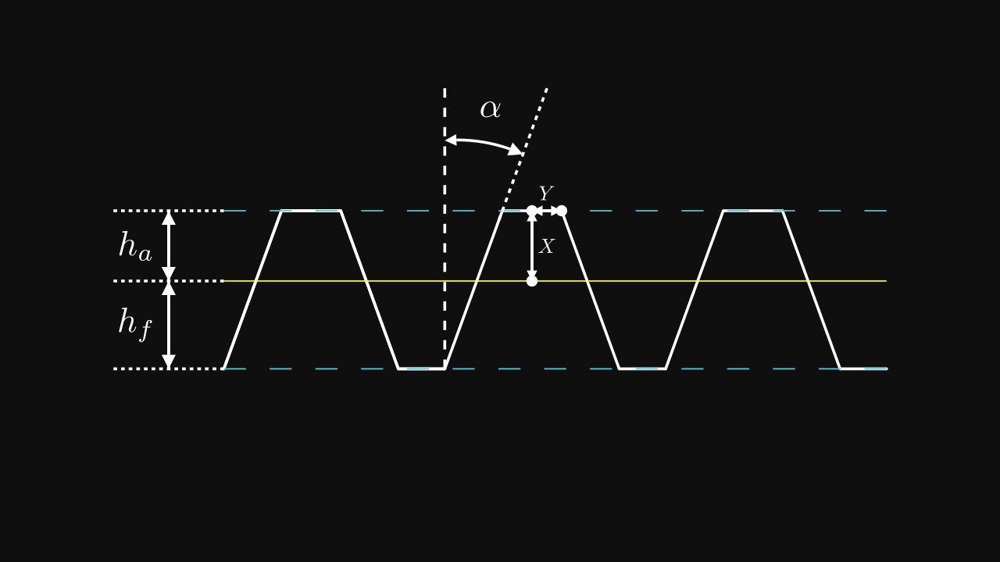
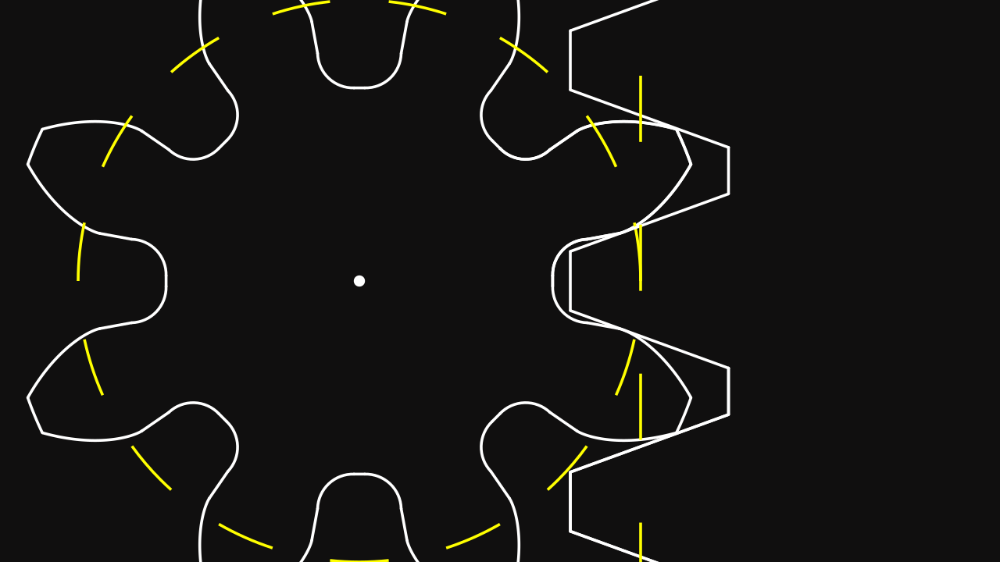
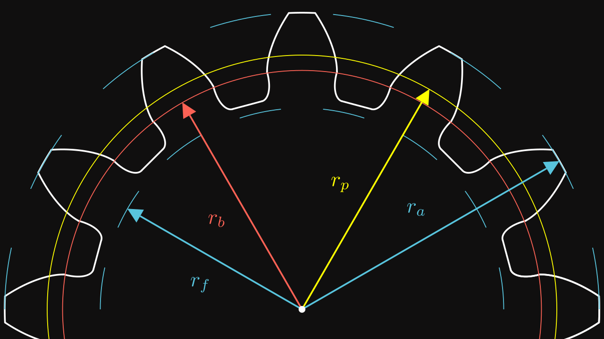

Involute gears are the most popular power transmission devices. We find them as an essential component for many machines. For instance, epicyclic gear train is a combination of gears which allows to make a reduction in a compact way. Spur gears are the most popular form and the most efficient type of gearing.
Involute function

In order to maximize the transmission effort, we introduce the involute function. This function is defined as we roll a rope up around a circle. Then the rope is rolled out while being tight such that its direction is tangent to the circle. The trajectory of the end point of the rope describes follows the involute function.
Now, all variables are defined on the following figure :

Then we can easily see the formula of the involute function \(\vec \theta(r, t)\): \[ \vec \theta(r, t) = r \ \vec u(t) - r t \ \vec v(t) = r \begin{pmatrix} \cos(t) + t \sin(t) \\ \sin(t) - t \cos(t) \end{pmatrix} \]
By adding a starting angle, the involute function can be written as : \[ \boxed{\vec \theta(r, t, t_0) = r \ \vec u(t - t_0) - r t \ \vec v(t - t_0) = r \begin{pmatrix} \cos(t - t_0) + t \sin(t - t_0) \\ \sin(t - t_0) - t \cos(t - t_0) \end{pmatrix}} \]
# pip install PyGLM
from glm import *
from maths import cos, sin
def u(t):
return vec3(cos(t), sin(t), 0)
def v(t):
return vec3(-sin(t), cos(t), 0)
def involute(t, r, t0=0):
return r * (u(t - t0) - t * v(t - t0))Note: for glm, see PyGLM.
Dimension of a tooth
There are several dimensions that are normalized in industry :
| Variable | Description | Relation |
|---|---|---|
| \(m\) | the module | Fundamental variable |
| \(z\) | the number of teeth | Fundamental variable |
| \(\alpha\) | the pressure angle | Fundamental variable |
| \(k_a\) | the addendum coefficient usually \(k_a = 1\) | Fundamental variable |
| \(k_f\) | the dedendum coefficient usually \(k_f = 1.25\) | Fundamental variable |
| \(h_a\) | the addendum height | \(h_a = k_a m\) |
| \(h_f\) | the dedendum height | \(h_f = k_f m\) |
| \(r_p\) | the pitch radius | \(r_p = \frac{mz}{2}\) |
| \(r_b\) | the base radius | \(r_b = r_p \cos(\alpha)\) |
| \(r_a\) | the addendum radius | \(r_a = r_p + h_a\) |
| \(r_f\) | the dedendum radius | \(r_f = r_p - h_f\) |
We can start with a simple gear profile :

On this figure :
- The red circle is the pitch circle.
- The yellow circle is the base circle.
- The blue inner circle is the dedendum circle.
- The blue outer circle is the addendum circle.
We saw that the involute function starts from \(t_0\) with the base radius \(r_b\). But we also need to know when the involute function stops. To get this information, we must find \(t\) when \(\Vert \vec \theta(r_b, t, t_0) \Vert = r_a\). \[ \begin{align} \Vert \vec \theta(r_b, t, t_0) \Vert^2 & = r_b^2 \left[ \cos(t - t_0) + t \sin(t - t_0) \right]^2 + \left[ \sin(t - t_0) - t \cos(t - t_0) \right]^2 \\ & = r_b^2 \big(\left[ \cos(t - t_0)^2 + \sin(t - t_0)^2 \right] + t^2 \times \left[ \cos(t - t_0)^2 + \sin(t - t_0)^2 \right] \\ & + \left[ 2t\cos(t - t_0)\sin(t-t_0) - 2t\cos(t - t_0)\sin(t-t_0) \right]\big) \\ & = r_b^2 (1 - t^2) \end{align} \]
Thus, for any \(r_a\), we have : \[ \boxed{t = \sqrt{\left( \frac{r_a}{r_b} \right)^2 - 1}} \] And \(t_a\) denotes the angle from the base radius to the addendum radius.
Also, on the figure Variables for Involute Function, there is two angles \(\delta\) and \(\gamma\). We can find \(\gamma\) given \(t\): \[ \tan(\delta) = \frac{rt}{r} = t \implies \boxed{\gamma = t - \delta = t - \text{arctan}(t)} \]
Now, we are able to compute the phase between two involute functions. We know that the angle step is equal to \(\frac{2 \pi}{z}\) where \(z\) is the number of teeth. The angle of thickness of a tooth is equal \(\frac{\pi}{z}\) which correspond to the angle of the tooth upper the pitch radius in red. Then the phase is equal to the difference between this angle and the angle of the involute stopping on the pitch angle: \[ \text{phase} = \frac{\pi}{z} - (t_p - \text{arctan}(t_p)) \quad \text{where} \quad t_p = \sqrt{\left( \frac{r_p}{r_b} \right)^2 - 1} \]
Then the empty part of the profile is made by joining two teeth by passing by the dedendum radius.
Code
from collections import namedtuple
from functools import partial
from manim import * # pip install manim
def profile(m, z, alpha=radians(20), ka=1, kf=1.25, interference=True):
# Parameters
ha = m * ka # addendum height
hf = m * kf # dedendum height
p = pi * m # step
rp = pitch_radius(m, z) # pitch radius
ra = rp + ha # addendum radius
rf = rp - hf # dedendum radius
rb = base_radius(m, z, alpha) # base radius
ta = angle_involute(ra, rb) # addendum angle
tp = angle_involute(rp, rb) # pitch angle
duplicate = (
lambda obj, angle: obj.copy()
.apply_matrix(mat3(X, -Y, Z))
.rotate_about_origin(angle)
)
phase = pi / z + 2 * (tp - atan2(tp, 1))
# Involute
side = ParametricFunction(partial(involute, r=rb), t_range=[0, ta])
# Arc parameters
ArcParameters = namedtuple("ArcParameters", ["center", "radius", "angle"])
r = 0.5 * (rb - rf)
t = -atan2(r, rf + r)
arcp = ArcParameters((rf + r) * u(t), r, t)
arc = Arc(arcp.radius, -pi + arcp.angle, -pi / 2, arc_center=arcp.center)
# Joint, top and bottom
angle_top = ta - atan2(ta, 1)
top = Arc(ra, angle_top, phase - 2 * angle_top)
joint = Line(arcp.center + arcp.radius * u(-3 * pi / 2 + arcp.angle), rb * X)
M = arcp.center + arcp.radius * u(-pi + arcp.angle)
angle_bottom = anglebt(M, u(0.5 * phase)) * 2
bottom = Line(M, rotation(-2 * pi / z + angle_bottom) * M)
# Patches
top_dot = Dot(ra * u(angle_top), radius=0.02)
side_dot = Dot(rb * X, radius=0.02)
point = arcp.center + arcp.radius * u(-3 * pi / 2 + arcp.angle)
joint_dot = Dot(point, radius=0.02)
bottom_dot = Dot(M, radius=0.02)
dots = (top_dot, side_dot, joint_dot, bottom_dot)
# Duplicated objects
duplicated_objs = map(
partial(duplicate, angle=phase), (side, arc, joint) + dots
)
return VGroup(
side, top, arc, joint, bottom, *duplicated_objs, *dots
).rotate_about_origin(-phase * 0.5)Note : for manim, see installation
Verification with the kinematic between a pinion and a rack
Now, it’s time to check if this profile is correct. Remember that a pinion must work on a rack.
Let’s see the profile of a rack :

The yellow line denotes the pitch line of the rack. \(h_a\) and \(h_f\) are computed in the same way as a gear.
The pitch circle of the pinion must roll the pitch line of the rack :

Do you see any interference ? Let’s see closer :
Now, we clearly see that the rack is in interference with the pinion. Then we must find the red function of the previous animation. You can notice that the movement of the rack of a point on the pitch line and center based on the tooth, has a trajectory of the involute function.
Thus, the interference curve is a translated involute function according to the position of the corners of the rack’s tooth. In other words, we define $(t, r, t_0, X, Y) $ as the interference curve such as : \[ \vec \phi(t, r, t_0, X, Y) = \vec \theta(t, r, t_0) - X \vec u(t - t_0) + Y \vec v(t - t_0) \] where \(X\) and \(Y\) are determined based the dimensions of the rack, as the distances \(X\) and \(Y\) from the pitch line dot to one corner.
Based on the figure Rack profile, we can find the following relations : \[ X = h_a \quad \text{and} \quad Y = \frac{\frac{\pi m}{2} - 2 m k_a \tan(\alpha)}{2} \]
Note we have chosen the left corner of the rack’s tooth.
Next we must find the intersection between \(\vec \theta(t_1, r_b, t_{01})\) and \(\vec \phi(t_2, r_p, t_{02}, X, Y)\) where \(t_1\) and \(t_2\) are the unknown variables. The equation to get the intersection is to hard to solve manually. Thus we are going to use the Newton’s Method to solve this problem.
The function that we want to optimize is defined as : \[ \vec f(t_1, t_2) = \vec \theta(t_1, r_b, t_{01}) - \vec \phi(t_2, r_p, t_{02}, X, Y) \] Note this function is a 2D vector.
Thus, its derivative is the jacobian matrix : \[ J(t_1, t_2) = \begin{bmatrix} \frac{\partial \vec f}{\partial t_1} \cdot \vec x & \frac{\partial \vec f}{\partial t_2} \cdot \vec x \\ \frac{\partial \vec f}{\partial t_1} \cdot \vec y & \frac{\partial \vec f}{\partial t_2} \cdot \vec y \end{bmatrix} = \begin{bmatrix} \vec \theta'(t_1, r_b, t_{01}) & -\vec \phi'(t_2, r_p, t_{02}, X, Y) \end{bmatrix} \] To get quickly derivatives of these functions, we start by computing the derivatives of \(\vec u(t - t_0)\) and \(\vec v(t - t_0)\) : \[ \vec u'(t - t_0) = \vec v(t - t_0) \quad \text{and} \quad \vec v'(t - t_0) = -\vec u(t - t_0) \]
Thus, we deduce the following derivatives : \[ \boxed{ \begin{align} \vec \theta'(t_1, r_b, t_{01}) & = r_b t_1 \vec u(t - t_{01}) \\ \vec \phi'(t_2, r_p, t_{02}, X, Y) & = \vec \theta'(t_2, r_p, t_{02}) - X \vec v(t - t_{02}) - Y \vec u(t - t_{02}) \end{align} } \] Now, all elements are found to be exploited in order to get a new profile.
Code
from collections import namedtuple
from functools import partial
from manim import *
def involute(t, r, t0=0):
return r * (u(t - t0) - t * v(t - t0))
def interference_curve(t, r, x, y, t0):
return involute(t, r, t0) - x * u(t - t0) + y * v(t - t0)
def derived_involute(t, r, t0):
return r * t * u(t - t0)
def derived_interference_curve(t, r, x, y, t0):
return derived_involute(t, r, t0) - x * v(t - t0) - y * u(t - t0)
def jacobian_involute(rb, rp, x, y, t0):
return lambda t1, t2: mat3(
derived_involute(t1, rb, t0),
-derived_interference_curve(t2, rp, x, y, t0),
Z,
)
def angle_involute(r, rb):
return sqrt(r * r / (rb * rb) - 1)
def profile(m, z, alpha=radians(20), ka=1, kf=1.25, interference=True):
# Parameters
ha = m * ka # addendum height
hf = m * kf # dedendum height
p = pi * m # step
rp = pitch_radius(m, z) # pitch radius
ra = rp + ha # addendum radius
rf = rp - hf # dedendum radius
rb = base_radius(m, z, alpha) # base radius
ta = angle_involute(ra, rb) # addendum angle
tp = angle_involute(rp, rb) # pitch angle
duplicate = (
lambda obj, angle: obj.copy()
.apply_matrix(mat3(X, -Y, Z))
.rotate_about_origin(angle)
)
la = rack.addendum_length(m, alpha, ka)
ts = tp - atan2(tp, 1)
phase = pi / z + 2 * (tp - atan2(tp, 1))
phase_empty = 2 * pi / z - phase
angle_top = ta - atan2(ta, 1)
tmin = la * 0.5 / rp
Functions = namedtuple("Functions", ["involute", "interference"])
functions = Functions(
partial(involute, r=rb),
partial(interference_curve, r=rp, x=ha, y=0.5 * la, t0=phase_empty * 0.5),
)
# Newton method
f = lambda t1, t2: functions.involute(t1) - functions.interference(t2)
J = jacobian_involute(rb, rp, ha, 0.5 * la, phase_empty * 0.5)
# t3 is not used, but exists because 3D vectors
t1, t2, t3 = 0.5 * ta, -0.5 * ta, 0
for i in range(8):
t1, t2, t3 = vec3(t1, t2, t3) - inverse(J(t1, t2)) * f(t1, t2)
# Involute and interference curve
side = ParametricFunction(functions.involute, t_range=[t1, ta])
interference = ParametricFunction(functions.interference, t_range=[t2, tmin])
# Top and bottom
top = Arc(ra, angle_top, phase - 2 * angle_top)
M = functions.interference(tmin)
angle_bottom = anglebt(M, u(0.5 * phase)) * 2
bottom = Line(M, rotation(-2 * pi / z + angle_bottom) * M)
# Patches
top_dot = Dot(ra * u(angle_top), radius=0.02)
interference_dot = Dot(functions.interference(t2), radius=0.02)
involute_dot = Dot(functions.involute(t1), radius=0.02)
bottom_dot = Dot(M, radius=0.02)
dots = (top_dot, interference_dot, involute_dot, bottom_dot)
# Duplicated objects
duplicated_objs = map(
partial(duplicate, angle=phase), (side, interference) + dots
)
return VGroup(
side, interference, *duplicated_objs, top, bottom, *dots
).rotate_about_origin(-phase * 0.5)And the gear profile :

Note the closest radius to the pinion’s center is greater than the dedendum radius due to the interference curve.
Let’s see the rack movement now :
Conclusion
That’s it! Now you are able to make a correct spur pinion that follows the kinematic rules between rack and itself.